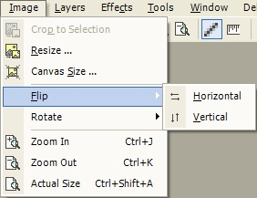

Flip Operations
|
 There are two Flip Operations (Image-->Flip) on images: The Horizontal Flip and the Vertical Flip. The Horizontal Flip will flip the entire image from left to right (or right to left), and the Vertical Flip will flip the entire image up to down (or down to up depending on your point of view). |
An image altered by the Flip Operations: |
| Original Image | Horizontal Flip |
| Vertical Flip | Vertical And Horizontal Flip |